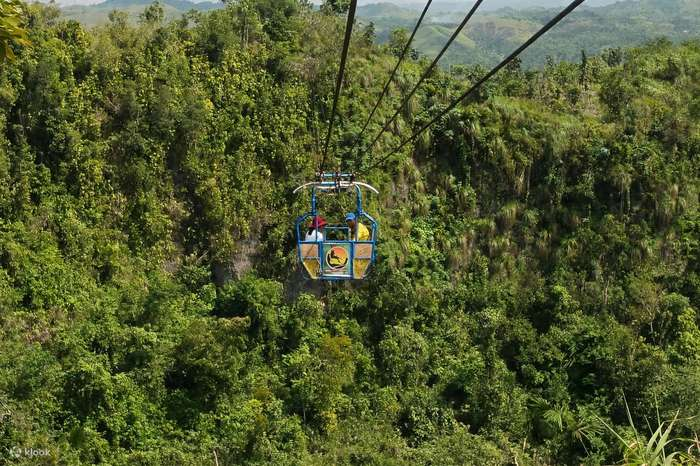

Danao Adventure Park is a cliff-edge playground in Magtangtang, Danao, a town in Bohol's northern interior, and it is the part of the island that has nothing to do with beaches. The park is built around the Wahig River gorge. Its headline ride is The Plunge, a canyon swing that drops you face-down toward the river, and around it sit ziplines, a cable-car ride, caves and river trips. If you plan to ride a couple of things and still be back in Panglao for dinner, expect to spend most of the day on the road and in the gorge.
Most visitors reach it by private vehicle or on a day tour, because Danao sits about 72 kilometres from Tagbilaran and the trip takes roughly two hours each way. That distance is the main trade-off. The park is open daily from 8:00 AM to 5:00 PM, so a late start means fewer rides, and the queue for the big attractions is the thing to beat.
This guide breaks the park down by what each activity costs, which rides suit which kind of traveller, how to get there from Panglao, Tagbilaran or Cebu, and whether the Sea of Clouds sunrise is worth an overnight stay.

Danao Adventure Park at a glance
- Where: Magtangtang, Danao, northern Bohol
- Distance: about 72 km from Tagbilaran, roughly 2 hours by private vehicle
- Open: daily, 8:00 AM to 5:00 PM
- Entrance: about ₱40 to ₱60 per person, with a lower rate for overnight guests
- Signature ride: The Plunge, a canyon swing over the Wahig gorge
- Best for: travellers who want a full adventure day, not a quick photo stop
The Plunge and the rest of the rides
The Plunge is a canyon swing, not a bungee jump. You are harnessed, tipped forward from a platform that sits roughly 200 metres above the canyon floor, and you fall for a stretch commonly quoted at 50 to 75 metres before the rope catches you and swings you across the gorge. Different sources round these numbers differently, so treat them as ballpark figures and ask the staff for the current ones. The ride itself is over in seconds, which is why many people book something else the same day.
The cable activities all cross the same gorge but feel very different from one another. The Suislide is the zipline, roughly 480 metres out and a little shorter on the way back, and you can ride it seated or lying flat. It is the one to pick if you want to look around instead of screaming. The Sky Ride is a cable carriage that carries up to four people at a time, which makes it the easy choice for parents, grandparents and anyone who wants the view without the adrenaline. Pedal-powered Zip Bike and Hamster Wheel rides and a Giant Swing round out the cable side, and a glass cliffwalk is another short stop for people who like to test their knees.
Away from the cables, the gorge offers caving, river kayaking, river tubing, river trekking and rappelling. Ka-Mira Cave is the beginner cave. Baliho Cave is the one for people with more caving experience, and guides may point out that snakes are possible there. Water activities depend on the river, so a heavy rain can cancel kayaking or tubing, and the guides make that call on the day.
A sensible order for nervous riders is Suislide first and The Plunge second. The zipline gets your body used to hanging from a harness over empty space before you face the bigger drop.
What it costs once you start riding
The gate fee is small. The money goes into the individual rides, which are priced separately, so a full day costs far more than the entrance suggests. The rates below are the figures most often listed. They have shifted over the years and across sources, so confirm each one at the ticket counter before you commit, especially if you plan to ride several activities.
As a rough example, entrance plus The Plunge, the Suislide and the Sky Ride comes to about ₱1,350 per person at those rates. Add a cave and lunch and the day lands around ₱1,800 to ₱2,000, before transport. Check whether a day tour includes the rides or lists them as extras, because that one detail changes the real price.
How to get to Danao from Panglao, Tagbilaran and Cebu
There is no tourist shuttle that drops you at the gate, so the choice is between a private ride, a tour and the public bus. The first two are faster and the third is cheaper.
Starting in Panglao
Private van or day tour
Plan on roughly one and a half hours of driving. A private vehicle round trip from Tagbilaran has been quoted at about ₱3,000 to ₱5,000, and many tours include pickup from Panglao hotels.
Starting in Tagbilaran
Bus or van from Dao Terminal
Buses to Danao cost about ₱75 to ₱85 and vans about ₱140. Buses leave at set times starting at 5:00 AM, so take an early one. Allow about three hours by bus.
Starting in Cebu
Ferry to Bohol first
Take a fast ferry across and continue by private vehicle. Our Bohol day trip from Cebu guide covers the crossings and what a single day on the island can realistically hold.
If you go by bus, the last leg matters. The bus drops you in Danao town, and a habal-habal (motorcycle taxi) takes you from there to the park for around ₱40 to ₱100 depending on who you ask and how many are riding. Ask about the ride back before you pay, because evening rides get scarce. Bus timetables also change, so check the current times at Dao Terminal, and leave the park well before the last bus back to Tagbilaran.
Travelling from Panglao? Our Panglao and Alona Beach guide covers where to stay on the island, a useful read if you are still choosing a base for the drive north.
A full day that does not waste the drive
The usual mistake is arriving mid-morning and spending the best hours in a queue. Aim to be at the park when it opens at 8:00 AM, which for most people means leaving Tagbilaran or Panglao around 6:00 AM.
One day · DanaoRides first, caves after lunch
- 6:00 AMLeave Panglao or TagbilaranA private van lets you stop along the road if you want to
- 8:00 AMPay entrance, then the SuislideRide the zipline first to settle your nerves
- Mid-morningThe PlungeDo it while the queue is short and you still have the energy
- MiddayLunch at the park caféEating after the big rides is easier on the stomach
- AfternoonCave or river, then the Sky RideA gentler finish with a view over the gorge
- By 4:00 PMHead backLeave earlier if you depend on the last bus
If you want to add Chocolate Hills views, some day tours include a stop at Sagbayan Peak. That makes the day longer, so decide before you book whether you want rides or sightseeing to be the main event. Packing both usually means rushing one of them. Our Bohol itinerary for 2 or 3 days shows where a Danao day can fit between the island's classic stops.
Is the Sea of Clouds worth the overnight stay?
Danao is also known for a sunrise view in which cloud fills the valleys below the ridges. It is a natural effect, not a scheduled attraction, so nobody can promise it for a given morning. The odds improve one to three days after heavy rain, when the air is humid and the sky clears. Viewing runs from roughly 4:30 to 6:30 AM, and you should be in place about half an hour before the sun comes up.
That timing is why people stay the night. You can sleep at the park or at Kape Sky Lodge nearby, then take a taxi to the viewpoint in the dark. A taxi from the park to the viewpoint has been quoted at around ₱300 per person. Leaving Tagbilaran at 3:00 AM for a sunrise that might not show is a gamble most people regret. The wet season, roughly May to November, gives the clouds their best chance, though it also brings the heavier rain that can shut down kayaking and tubing in the afternoon.
Sunrise
Be there by 4:30 AM
The best view comes just before and after sunrise. Arrive in the dark with a torch and a jacket.
Weather
Look for a clear day after rain
Clouds form most reliably after a wet spell, so check the forecast and the previous day's weather before you decide to stay.
Season
Dry months suit the rides
December to May is steadier for kayaking and caving. Choose the season based on whether you care more about rides or clouds.
Safety, limits and what to bring
Staff brief you before each ride, and harnesses are checked before you leave the platform. Age and weight limits apply to The Plunge and the Suislide, but they are not posted online, so ask at the counter before you queue, especially if you are travelling with children. The big rides are not suitable for people with heart problems, high blood pressure, back or mobility issues, or anyone who is pregnant. Skip the alcohol before riding and follow the staff's instructions at every step.
Before you go
- Wear closed shoes you can get wetSlippers are a bad idea for caves, river trails and the platforms.
- Carry cash and a dry bagSignal is patchy in the valley, and phones do not enjoy the river.
- Check your travel insuranceSome policies exclude adventure activities, so read the fine print before you book a canyon swing.
- Ride the big one earlierWeekends bring queues, and the heat and the wait both wear on your nerves.
Is Danao worth the long drive?
It is worth it if you want Bohol to feel like more than a loop of viewpoints. The Chocolate Hills are something you look at. Danao is something you do, and the gorge gives you a reason to spend half a day with your hands sweating on a harness. It is less worth it if heights make you miserable, if you only have one day on the island and want the standard sights, or if you would rather spend the road time on a beach.
For everyone else, a sensible plan is this: pick two rides, add one cave or river activity, book an early start, and stay the night only if the forecast gives the Sea of Clouds a fair chance.

Comments
No comments yet. Been here recently? Share a tip or ask a question.
Leave a Reply